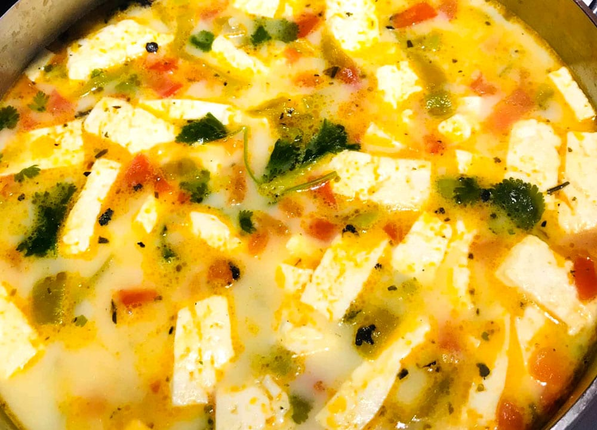

Grandma's Caldo De Queso (Cheese Creamy Soup)

Caldo De Queso
Everybody knows that our grand mothers' meals are the best, so here goes a recipe of a tasty creamy soup.
Ingredients
- Queso Fresco
- Tomatoes
- Onions
- Potatoes
- Milk
- Chicken bullion
- Salt & Pepper
Instructions
- Boil some water in a cooking pot.
- In a hot pan throw in the potatoes and after 5 minutes add the tomates and onions, season them with salt and pepper.
- Add the vegetables into the cooking pot.
- Add chicken bullion and milk.
- Stir for a couple of minutes.